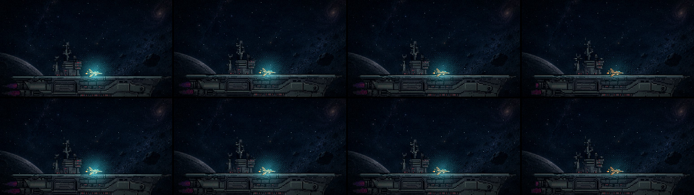
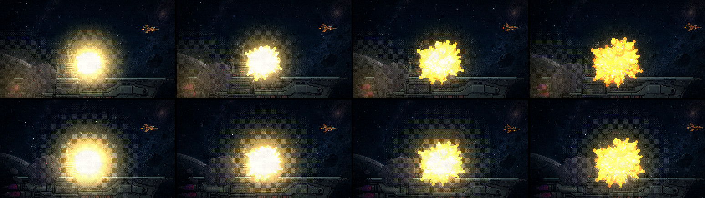
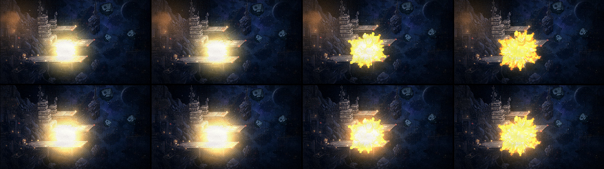
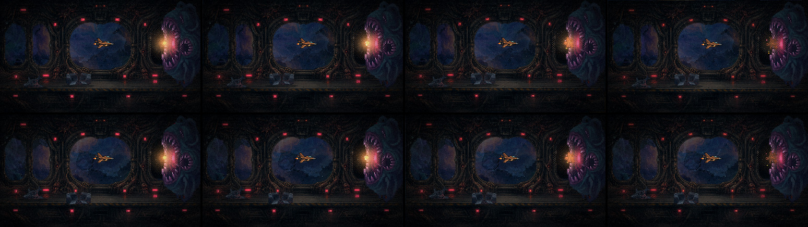
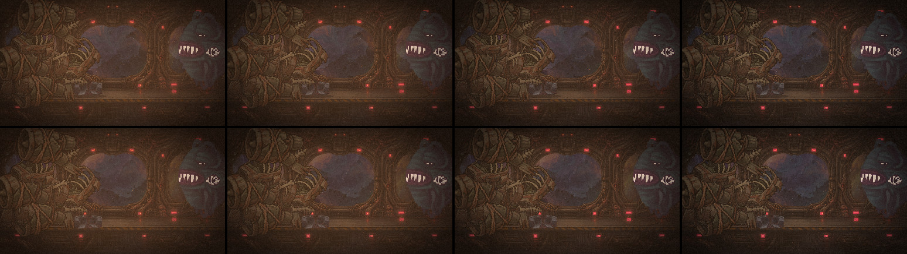
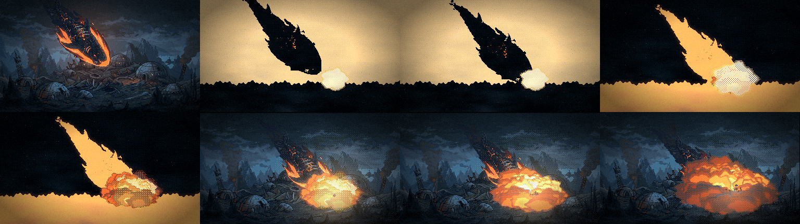
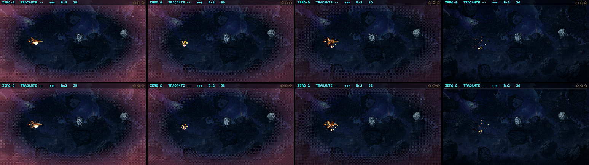
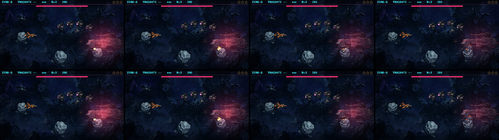

Os clarões instalados no jogo
13/11 · bloco I, etapa 2 · spec specs/2026-11-13-bloco-i-flashes-design.md · plano
plans/2026-11-13-bloco-i-flashes.md · os conceitos em
flashes.html.
Os 21 flashes de câmera saíram do jogo, e o clarão de tela cheia da cutscene final também. No lugar entraram as quatro formas que você aprovou, com o teto de 3 por segundo. Em cada vídeo, o conceito aprovado está à esquerda e o jogo de verdade à direita. Nas tiras, o conceito em cima e o jogo embaixo.
O golpe, a bomba, a fúria e a cadeia da cutscene 2 saem iguais ao conceito pixel a pixel. As cutscenes 1 e 3 não se repetem iguais de uma filmagem para a outra (as explosões e os destroços variam), então ali a comparação é a olho.
Cutscene 1
"Nave armada"

A explosão final da Aurora

Cutscene 2
A doca explodindo
Aqui o jogo difere do conceito de propósito: no conceito a sonda adivinhava a fonte da luz e deixava uma mancha laranja no canto de cima à esquerda. No jogo a luz nasce exatamente na explosão.

Cutscene 3
O impacto na garganta

O clarão final (o véu fraco)

Cutscene final · a queda do Leviatã
Não estava no conceito. Os quadros de impacto (as silhuetas) ficaram como eram. O clarão de tela cheia que vinha logo depois do choque virou a luz em volta do focinho. Só o jogo, 8 quadros em volta do choque:

F2 · o golpe na nave

F2 · a bomba e a fúria da Capitânia

O que não foi filmado
Estão no jogo pela mesma regra, mas não passaram por filmagem: a virada da Torre da F1, a fusão da Serpente, o núcleo da F4, o Casco (carta), a nave rompendo a atmosfera e a bomba de pânico (o modo antigo da bomba). Vale olhar jogando.
O que eu preciso de você
- A cutscene final: a luz no focinho depois do choque segura o momento, ou ficou discreta demais?
- Jogando: algum clarão faz falta como era, ou algum ainda incomoda?